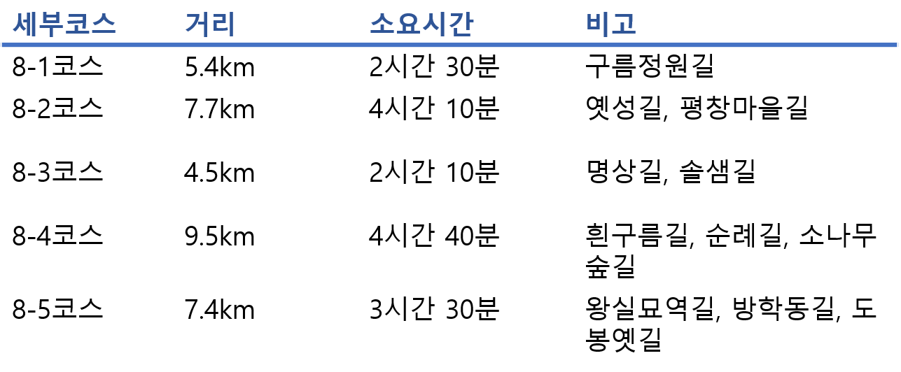
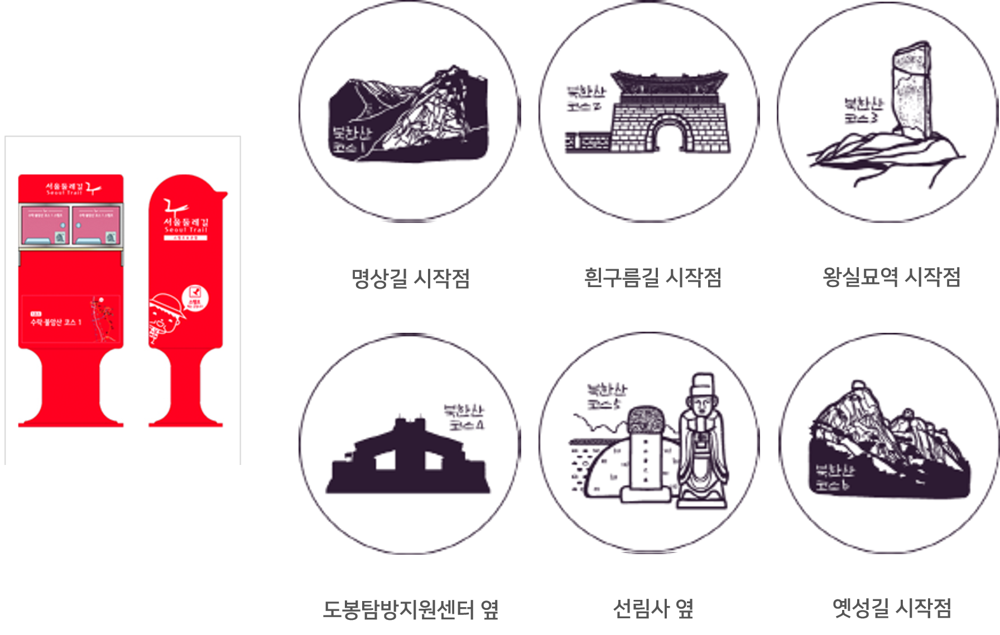

8코스-북한산코스
8코스-북한산코스 강북구,도봉구,성북구,은평구,종로구 34.5km 17시간 중급
세부코스정보
8코스는 북한산 둘레길을 이용해 통과하는 노선으로 이미 개통이 된 곳으로 이용하여 정비가 잘되어 있다. 대체적으로 경사가 급하진 않지만 약간의 코스에서 어려움이 있다. 또한 산 코스임에도 노선이 길어 하루동안 코스를 통과할 수는 없다. 8코스는 대체적으로 사찰과 문화재뿐만 아닌 계곡 등의 자연적 요소 등이 분포되어있어 볼거리가 다양한 코스이다.

교통편
출발지 : 지하철 3호선 구파발역 2번 출입구, 북한산 인접지
도착지 : 지하철 1호선, 7호선 도봉산역 1번 출입구
세부코스
은평뉴타운~선림사~북한산생태공원~탕춘대성암문~불심원~연화정사~성북생태체험관~빨래골지킴터~이준열사묘소~419국립묘지~봉황각~우이령길입구~연산군묘~정의공주묘~무수골~도봉탐방지원센터~도봉산역
관광포인트
- 자연학습을 통해 식물과 동물을 알고 교육을 할 수 있는 북한산 인근에 위치한 '성북생태체험관'
- 대남문과 비봉능선에서 이어져 내려와 조선시대 도성과 북한산성을 연결하여 축성된 성문 '탕춘대성암문'
- 한말의 독립운동가 '이준의 묘'
- 1963년 약 3,000평으로 건립된 '419국립묘지'
- 독립운동사에서 중요한 기능을 수행한 민족의 성지 '봉황각'
여행자 정보
- 지하철 3호선 구파발역 2번 출입구
- 코스 중간이 산길이라 구파발역 인근에 식당에서 식사를 하고 출발
- 서울 둘레길과 북한산 둘레길이 겹치는 구간이기 때문에 북한산 둘레길 표식을 따라 이동해도 됨
- 쌍둥이 전망대에서 잠시 쉬면서 도봉산을 둘러보기 좋음
- 서울둘레길안내센터에서 완주증을 받을 수 있음
* 도보인증안내 : http://gil.seoul.go.kr/walk/main.jsp
스탬프 정보

주요 지점 및 추천 장소
북한산국립공원은 수많은 능선과 계곡이 펼쳐져 있어 1년 내내 오르내려도 늘 새롭다. 아담한 오솔길부터 실개천이 흐르는 호젓한 등산로, 험한 암벽 코스까지 다양한 산행 코스가 등산객을 기다리고 있다. 북한산에 처음 오는 등산객도 쉽게 오를 수 있는 코스는 북한산성 코스다.
북한산국립공원

붓꽃이 가득한 특수 식물원이자 생태공원
서울 강북의 끝자락인 도봉산과 수락산 사이에 세계 4대 꽃 중 하나로 꼽히는 붓꽃(Iris)이 가득한 특수식물원이 들어섰다. 서울창포원은 붓꽃원, 약용식물원, 습지원 등 12개의 테마로 구분 조성됐다.
이중 붓꽃원에는 130종의 다양한 붓꽃 30만본을 종류별로 붓꽃의 아름다움을 감상할 수 있게 만들었다.
운영 요일 : 월~일
입장료 : 무료